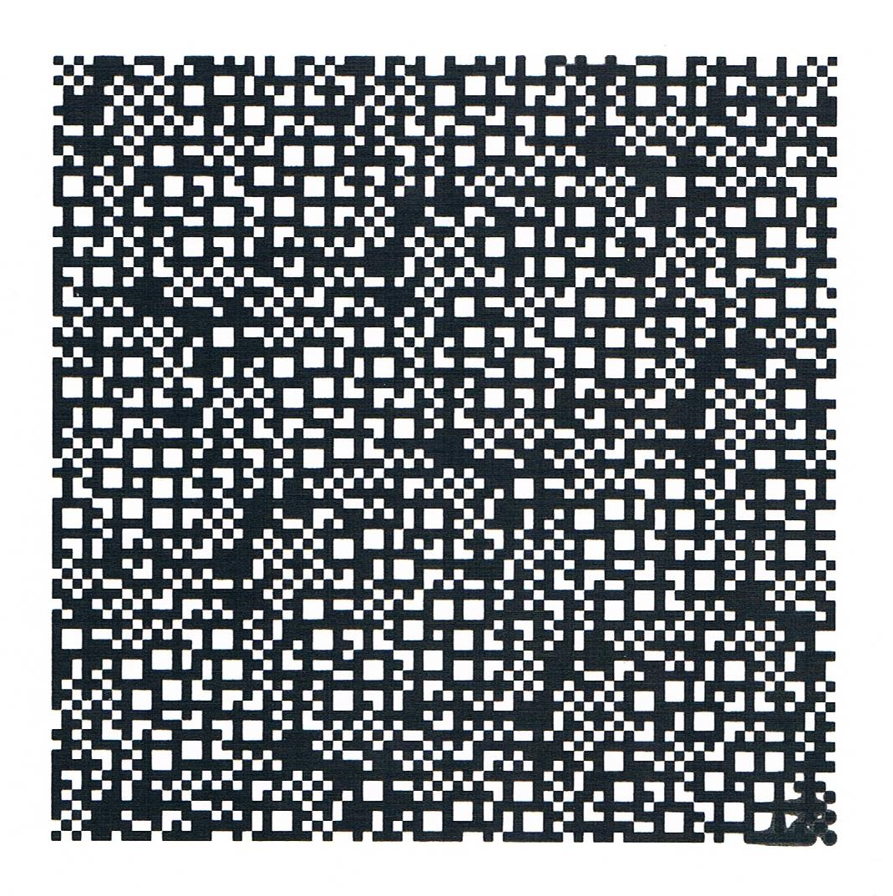
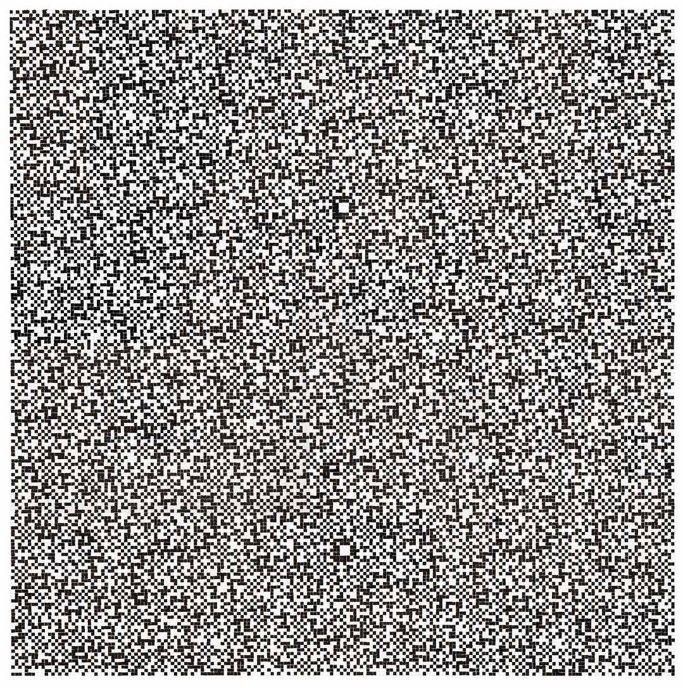

DotSpace is a collaboration with the musician and visual artist Richard Scott, who is interested in how scientific concepts such as order, disorder and ergodicity manifest in visual art.
Richard’s DotSpace pictures are discrete interference patterns, created by overlaying binary sequences. These drawings are painstaking work which involve a lot of counting. When we first met, he was screening for new, interesting patterns by hand. I offered to write a programme to automate this screening step and allow Richard to generate trial pictures very quickly. The patterns he is happy with are then drawn by hand or screen printed.
Richard has presented his work at the Birmingham Architecture Festival, Birmingham City University, Midlands Arts Centre, Anglia Ruskin University, Ideas of Noise Festival and Balsall Heath Biennial. From October 2019 until January 2020 DotSpace exhibited at the Herbert Art Gallery and Museum, The Row Gallery and Leamington Spa Art Gallery and Museum as part of the Coventry Biennial.
The DotSpace code is available in a Github repository and there is a web app to create your own Dotspace patterns.


Left: Hand-drawn dotspace; Right: Screen-printed dotspace